Which mode? Start with two questions
distil has several ways to run, and the names are jargon (“wrap”, “hook”, “proxy”, “MCP”). You don’t need to learn them. Two questions pick your mode, and the second one matters more than the first.
![A decision tree. First question: how do you pay? Pay-per-use with an API key leads to distil wrap, which sits invisibly between your assistant and the provider and cuts the bill. A flat monthly subscription leads to distil hook install, which lets Claude Code compress its own tool output and buys back rate-limit headroom. Second row: a coding assistant means wrap or hook, an app you are building means proxy or library, Claude Desktop means the MCP server, a whole team means the gateway. Footer: savings depend on the shape of your tool output, not the mode — JSON 28 to 33 percent, repeated log lines up to 99 percent, prose about 0 percent.](assets/choose-your-mode.svg)
distil onboard. It
detects your operating system, which assistants you have installed, and whether you’re on
a subscription or an API key — then prints the exact commands for your setup, in
order. This page is the same reasoning, written out.
Question 1 — how do you pay?
This decides what you save, not how much.
| You pay | What runs out | What distil buys you |
|---|---|---|
| Per use — an API key, a bill each month | Money | A smaller bill. Fewer tokens sent means fewer tokens charged. |
| Flat monthly — Pro or Max subscription | Your usage limit | More room before you hit the wall. The bill is fixed; the window isn’t. |
We used to say a subscription got “context and latency, not the bill.” A reader pointed out that was wrong — running out of quota is a cost — and they were right. That correction has its own page.
Question 2 — what are you actually running?
🖥️ A coding assistant in a terminal
Claude Code, Codex, Gemini CLI, Aider, Goose, OpenCode and friends.
On an API key — put one word in front of your normal command:
distil wrap -- claudeNothing about how you work changes. distil sits in between, invisibly, and shrinks what gets sent. This is the mode most people want.
On a subscription — a different mechanism entirely:
distil setup --hooks # then restart your agentYour agent compresses its own tool output before reading it, using an extension point
its vendor built and documents. Nothing sits in between and nothing touches your login —
which matters, because Anthropic’s terms restrict intercepting subscription traffic, and
distil won’t risk your account for a few percent. On a subscription it is lossless-only
unless you opt in with --digest. Claude Code, Gemini CLI and Codex CLI, plus
Cursor’s MCP tools: which clients and why.
🧱 An app you’re building
Two options, same engine.
Proxy — run a small local service and point your app’s base URL at it. Works with any language or framework, no code change beyond one config line.
Library — from distil import compress_messages, called
exactly where you want it. No background service, no network hop, but you write the code.
Already using LangChain, LangGraph, LiteLLM, Agno or Strands? There are drop-in hooks for those — see Integrations.
💬 Claude Desktop
The desktop app can’t be wrapped or proxied. What works is the MCP server: it hands the assistant two tools — shrink this, and give me the original back.
claude mcp add distil -- distil mcpThe assistant decides when to use them, so this is occasional rather than automatic. Worth it when you routinely paste or read very large documents.
🏢 A whole team
The gateway is one shared service everyone routes through, with per-team accounting and keys. See Deploy & Security.
How much will it actually save?
Here is the part most tools won’t tell you: the mode barely matters. What your tools print matters enormously.
| What your assistant reads | Typical saving |
|---|---|
| Config files, dependency lists, API responses (JSON) | 28–33% |
| Logs where the same line repeats | up to 99% |
| Ordinary prose, documentation, chat | ~0% |
Logs where every line differs, git log | ~0% |
Two rules of thumb:
- A short session that never reads a big file will show close to 0%. That is the tool working correctly, not failing. There was nothing to compress.
- Long sessions that re-read the same large files are where it pays. The same content gets re-sent every turn; that’s the waste distil removes.
How do you know it didn’t break anything?
Every compressor claims savings. distil is built around a second question: did your assistant still do the same thing? It answers that one with measurements, not assurances.
| Command | Tells you |
|---|---|
distil savings | Tokens and dollars saved, calibrated against what you were actually billed |
distil quota | Your subscription windows, live — so “we saved you room” is checkable |
distil shadow-stats | How often a compressed request produced a different decision than the uncompressed one |
distil dashboard | All of it, in a browser |
distil doctor | Whether your setup is actually routing (the most common failure is silent) |
One-line cheat sheet
| You are… | Run this |
|---|---|
| Coding with an API key | distil wrap -- claude |
| Coding on a Pro/Max subscription | distil hook --install |
| Using Claude Desktop | claude mcp add distil -- distil mcp |
| Building an app | distil proxy or the library |
| Running a team | distil gateway |
| Not sure | distil onboard |
Everyone, afterwards: distil savings on an API key, or distil quota on
a subscription — to see whether it helped you, rather than taking our word for it.
Subscription savings — the window, not the bill
On a flat-rate Pro/Max plan there is no per-token bill to cut, so distil's dollar figures are notional. The thing that is not notional is the rate-limit window: every token spent on a 40 KB test log is quota unavailable for the next task. This page is how distil saves that quota, what it measures, and where it honestly saves nothing.

Why the proxy can’t help here
distil’s usual method is a local proxy. On a subscription it deliberately runs in
--lossless-only mode and saves very little, because Anthropic’s consumer terms
(Section 3, item 7) prohibit accessing the service “through automated or non-human
means… except when you are accessing our Services via an Anthropic API Key.” That was
clarified and enforced in February 2026. distil takes the conservative reading: your account
is not worth a few percent.
So the question is not how do we compress harder through the proxy. It is what path saves tokens without a proxy touching your session at all.
The answer: a first-party hook
Claude Code ships a documented extension point. A PostToolUse hook can replace a
tool’s result before the model reads it, via
hookSpecificOutput.updatedToolOutput. Claude Code compresses its own tool output, in
its own process, using a mechanism Anthropic built. No proxy. No credential interception. Nothing
bridged into another client.
distil hook --install # writes ~/.claude/settings.json, idempotent
distil hook --selftest # verify the schema adapters offline
distil quota # see the window it is savingAppend-only by construction — why the cache survives
distil previously measured its own proxy digest doubling cost on a live A/B:
a sliding recency window rewrote the previous turn’s last tool result every turn, one message
before the cache breakpoint, collapsing the cached prefix (median cache_read
233.8k → 24.7k). A hook cannot do that. It sees one result, once, at the moment it
is produced, and no hook event can rewrite history. Compression is append-only because
the platform makes it so — not because we remembered to be careful.
The same policy as the proxy sets the tier: on a subscription the hook is
lossless-only by default. Lossless-only is both the correct tier and the compliant one.
If you want more, you can opt in explicitly — distil hook install --digest (or
distil setup --hooks --digest) — and the hook adds the proxy’s Tier-1 digest
for verbose line output. Each stub is emitted only after the original is written to distil’s
local restore store and read back byte-exact, and it names the distil expand
<handle> command that recovers it; no tool is injected and nothing is intercepted. The
opt-in is recorded, and distil hook status shows which tier is active and why. On a
metered API key the digest is on by default, as it is on the proxy. See Post-tool
hooks.
Set it up — three commands
-
Install distil if you haven’t:
pipx install distil-llm -
Install the hook. This writes
~/.claude/settings.json. It is idempotent (safe to re-run) and it preserves any hooks you already have — distil only ever replaces its own entry.distil hook --install - Restart Claude Code. Hooks are read at startup, so a running session will not pick it up.
Verify it’s working
A schema mismatch on this path is silent — Claude Code ignores a malformed replacement and uses the original with no error anywhere. So verify rather than assume:
$ distil hook --selftest
PASS bash compresses large clean stdout
PASS bash preserves unknown keys
PASS bash refuses: stderr present
...
21/21 checks passedThen run something with big, repetitive output in a real session — cat a
large JSON file, or a verbose test run — and check the window before and after with
distil quota.
Turning it off
distil hook --uninstall # removes only distil's entry, leaves your others aloneTroubleshooting
| Symptom | Likely cause |
|---|---|
| No visible change in token use | Your tool output isn’t a compressible shape — see where it saves nothing. This is the common case, not a bug. |
distil quota says unavailable | You’re on a metered API key (quota windows are a subscription concept), or not logged in to Claude Code. |
| Hook doesn’t seem to run | Claude Code wasn’t restarted, or another tool rewrote settings.json. Re-run distil hook --install. |
| Errors look truncated | They shouldn’t be — distil never compresses a failed tool, a non-empty stderr, or an MCP error. Please file an issue. |
What it measures — on a real session
Paired live A/B, same task and fixture, hook off then on. Both arms answered the question correctly.
| Metric | Hook off | Hook on | Change |
|---|---|---|---|
| tool_result delivered to the model | 18,214 B | 11,178 B | −38.6% |
cache_creation_input_tokens | 67,696 | 22,045 | −67.4% |
cache_read_input_tokens | 209,474 | 104,289 | smaller prefix, cache intact |
| cost-weighted equivalent | 120,025 | 37,989 | −68.3% |
Raw: benchmarks/results/subscription-hook/ (e15_paired_ab.json for this one-session A/B, e15c_decision_equivalence.json for the five tasks, e15b_corpus_measurement.json for the corpus tally). A single session and five tasks: enough to catch a gross regression, not to certify a rate.
Cost weights: input = 1.0, cache_creation = 1.25,
cache_read = 0.10. The critical row is cache_read: it did
not collapse to zero. The proxy digest’s failure mode does not reproduce.
Decision-equivalence
Five decision-bearing tasks, two arms each, live. Every task’s answer is independently verifiable, so both equivalence and correctness are checkable.
| Check | Result |
|---|---|
| Arms agreed (hook on vs off) | 5 / 5 |
| Correct with hook on | 5 / 5 |
| Correct with hook off | 5 / 5 |
| Compression on those tasks | 25% – 96% |
n=5 with no A/A arm: enough to detect a gross regression, not a certificate. The proxy tier carries a conformal bound; this one does not yet.
Where it saves nothing — stated plainly
Tier-0 is JSON minification plus consecutive-run collapse. Both are lossless and both are shape-dependent. Measured with the real Anthropic tokenizer:
| Output shape | Saved |
|---|---|
| Pretty-printed JSON (npm, pip, kubectl, terraform, API responses) | 28–33% |
| Logs with consecutive duplicate lines | up to 99% |
| Unique-per-line logs | 0% |
| Interleaved log lines | 0% |
git log / git diff --stat | 0% |
| distil’s own eval corpus | 0.00% |
That last row is not a typo. distil’s corpus contains 43 tool-output blocks; the five over 2 KB have zero consecutive duplicate lines and zero JSON, so Tier-0 has nothing to act on. The corpus was built to exercise decision-relevance probes, not compressibility. We publish it because quoting only the favourable fixtures would be the overclaim we criticise in others.
heuristic, subword) are whitespace-blind: they report
0.0% on pretty-printed JSON where the real Anthropic tokenizer reports
33.3%. Measuring this feature with the default counter would have hidden its
main win entirely. Every number on this page uses --tokenizer anthropic.
Reading the window
distil quota reads the rate-limit windows directly, so “distil saved you
quota” is a measurement rather than a claim:
$ distil quota
Subscription quota (the currency a flat-rate plan actually spends):
five_hour [########............] 43.0% used resets 2026-08-16 15:49Z
seven_day [....................] 4.0% used resets 2026-08-23 07:59ZIt is read-only, uses the OAuth token Claude Code already stores, and never logs it. Any failure — no token, non-200, changed shape — reports unavailable rather than a number, because a fabricated zero would read as “saved everything” in a before/after comparison.
Credit where it is due: Headroom shipped subscription quota telemetry before we did, against the same endpoint. They built the instrument for the subscription user’s real currency while distil’s copy was still saying that currency did not count. We adopted the idea.
Other agents
| Agent | Can a hook rewrite tool output? | Status |
|---|---|---|
| Claude Code | PostToolUse → updatedToolOutput | Supported today |
| Cursor | postToolUse → updated_mcp_tool_output, MCP tools only | Supported (MCP output) |
| Gemini CLI | AfterTool → decision: "deny" + reason replaces the result | Supported |
| Codex CLI | PostToolUse → decision: "block" + reason replaces the result (updatedMCPToolOutput is still unsupported) | Supported |
| Windsurf | Post hooks are observe-only | Unsupported |
Re-checked 2026-09-25; sources and install commands are on Post-tool
hooks (distil setup --hooks installs every detected one). For agents without a
rewrite hook, the proxy and the in-process library remain the paths, and on
a metered key both reach the full reversible digest tier.
Honest scope
- Lossless only, by default. No digest stubs, no injected recall tool, no
summarization. The recoverable digest is an explicit opt-in (
--digest), recorded and shown bydistil hook status. Hooks installed before this release stay lossless-only until you re-install. - Bash and MCP tool results only, at or above 2 KB. Other built-in tools have undocumented output shapes and a near-miss is silently ignored, so distil declines them rather than guessing.
- Never touches failures. A non-empty
stderr, an interrupt, or an MCPisErrorresult is passed through untouched — Anthropic’s own warning is that stripping error detail makes an agent “proceed on a false assumption.” - Fails safe. Any exception, unknown shape, or transform that does not strictly reduce tokens results in the original being used.
- Not yet certified. The proxy tier carries a conformal decision-equivalence bound; the hook path has a 5-task smoke test. Treat it accordingly.